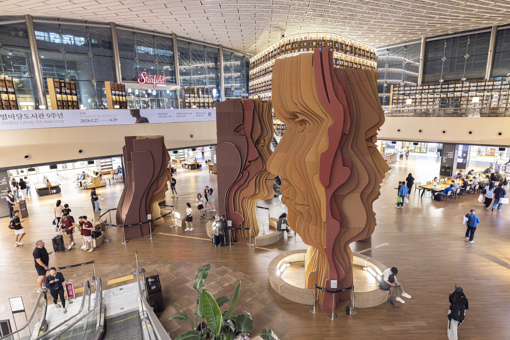
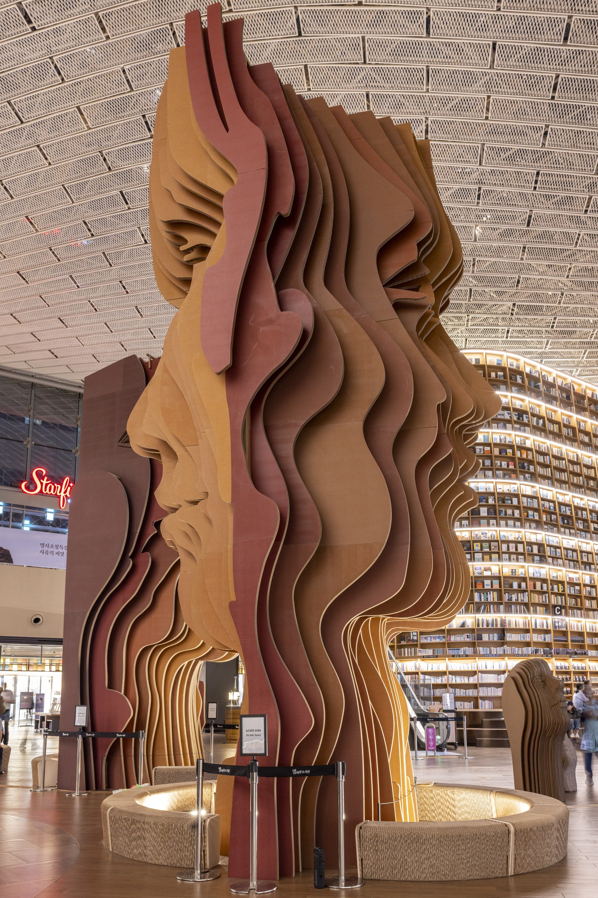
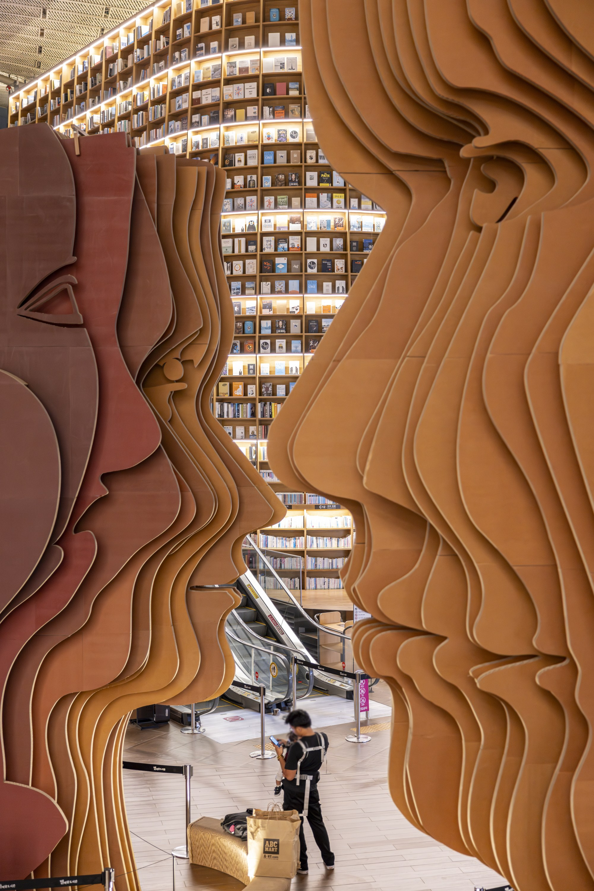
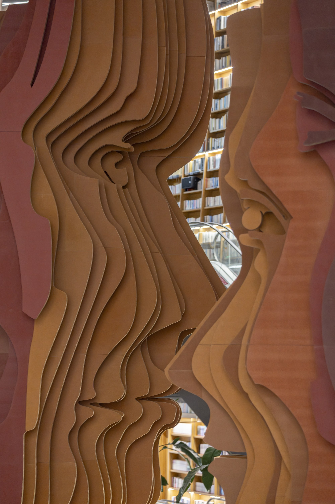
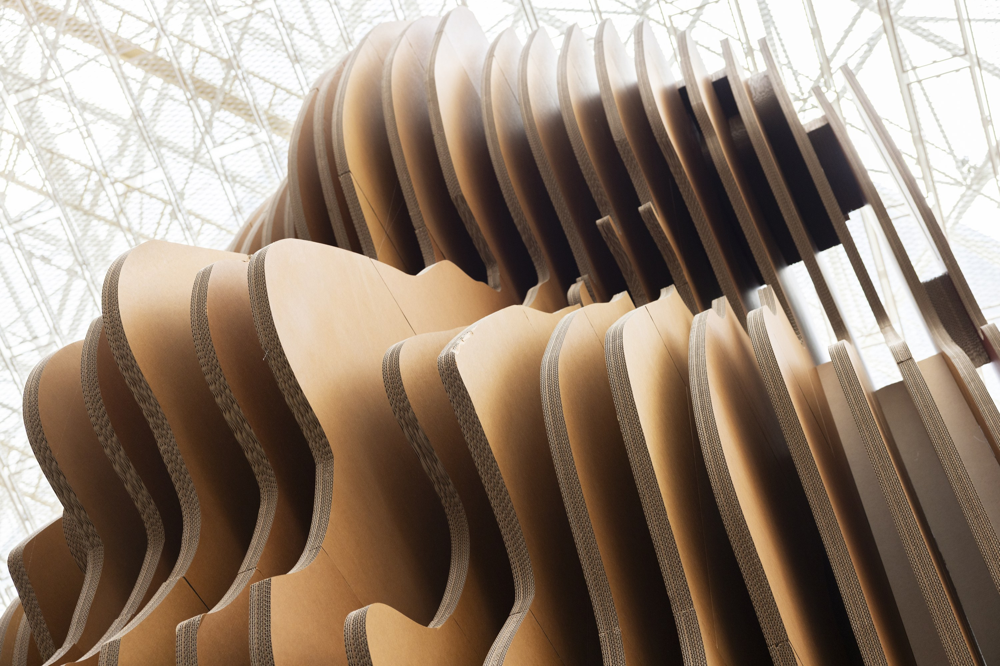
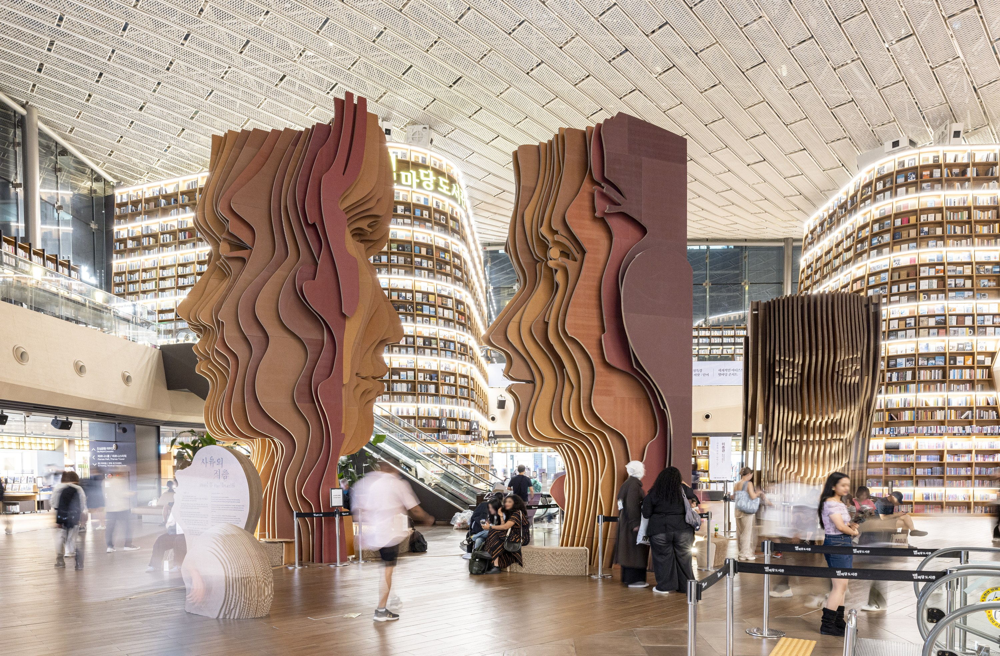

Installation Video — Starfield Library COEX Mall, Seoul

01. Installation Full View & Lighting Contrast

02. Wide Front View & Alignment of Paper Strata

03. Front Silhouette & Facial Form Alignment

04. 45-Degree Profile & Shifting Perspectives

05. Detail View — Paper Curvature & Layering

06. Top View — Accumulation of Knowledge & Materiality

07. Public Interaction & Visitors in Starfield Library